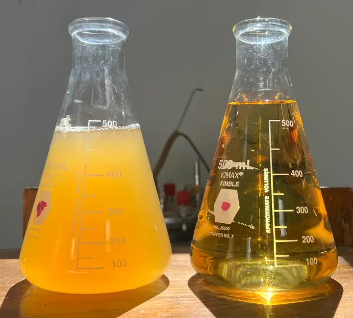

El reto
La kombucha es una bebida fermentada «viva»: contiene levaduras, bacterias y sólidos en suspensión que le dan turbidez y que pueden seguir actuando una vez envasada. Estabilizarla y clarificarla sin someterla a tratamientos que deterioren sus compuestos funcionales es un reto de proceso.
La propuesta fue separar por microfiltración los microorganismos y los sólidos responsables de la turbidez: un proceso físico, que no necesita calor, y cuyo resultado se aprecia a simple vista.

Cómo se hizo
- Caracterización de la muestraMedición del volumen de kombucha y observación de los sólidos en suspensión antes del proceso.
- Montaje del sistemaBomba peristáltica, portafiltros y manómetro para controlar la presión durante la filtración.
- MicrofiltraciónPaso de la kombucha a través de la membrana y recolección del permeado en matraz.
- EvaluaciónMedición del volumen de permeado y comparación de su claridad frente a la muestra sin filtrar.
Galería
Lo que demuestra
- Operación de un sistema de microfiltración a escala de laboratorio.
- Estabilización microbiológica mediante un método físico, sin calor.
- Evaluación del proceso: volumen de permeado y claridad del producto.
- Conservación de las propiedades funcionales de una bebida fermentada.